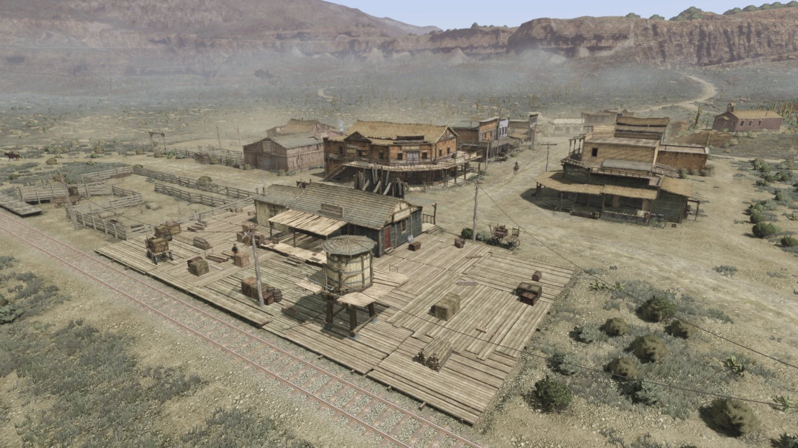
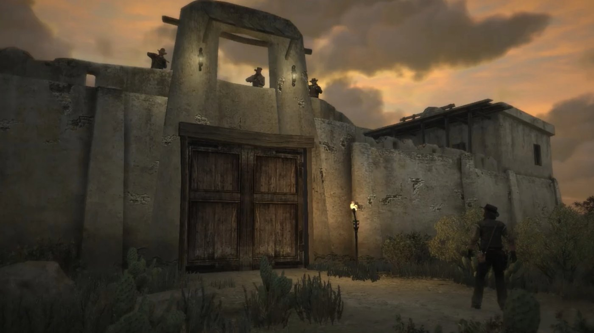
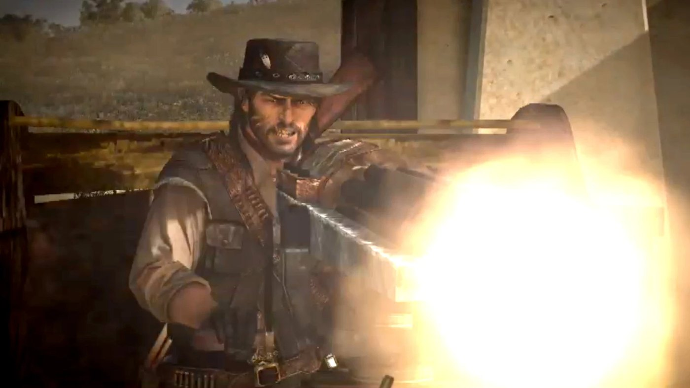

Story guide · Red Dead Redemption Act I: New Austin Red Dead Redemption Act 1 of 3 New Austin 1911 By Joseph Lambert · Updated September 9, 2026  Armadillo, the main town of New Austin and John Marston's base in the first act. Red Dead Redemption opens in 1911, twelve years after the events of Red Dead Redemption 2. John Marston is a rancher with a wife and a son. Federal agents take his family and send him west to bring in the men he once rode with. The first act covers New Austin, the desert territory where John hunts Bill Williamson. Full spoilers for Act 1 of Red Dead Redemption follow. Setting: New Austin, 1911 New Austin is the game's opening region, a dry frontier territory of desert, scrub and cattle country. Its main settlements are Armadillo, the town where John takes most of his early work, and MacFarlane's Ranch to the north. Tumbleweed sits in the far west. The frontier is closing: cars, telephones and federal law are arriving, and the outlaw era that produced John and his old gang is ending. The deal with Edgar Ross John is brought west by Edgar Ross and Archer Fordham, two agents of the Bureau of Investigation. They hold his wife Abigail and his son Jack in government custody. The terms are simple: John hunts down the surviving members of the Van der Linde gang, and his family is released. The three names on the list are Bill Williamson, Javier Escuella and Dutch van der Linde.  Fort Mercer, the abandoned army post where Bill Williamson's gang is dug in. Fort Mercer and the first attempt Bill Williamson has taken over Fort Mercer, an abandoned army post in Cholla Springs, and runs a large gang from behind its walls. John rides up to the gate alone and asks Bill to surrender. Bill refuses from the top of the wall, and his men open fire. John is shot and left for dead outside the fort. The opening act turns on this failure: John cannot take Fort Mercer by himself, so he has to build a group that can. MacFarlane's Ranch and Bonnie Bonnie MacFarlane finds John wounded and brings him back to her family's ranch, where a doctor treats him. John works off the debt as a ranch hand: herding cattle, breaking horses, clearing rustlers and burning infected crops. Bonnie becomes his first ally in the territory and introduces him to the people who matter locally. Later in the act she is kidnapped and comes within seconds of being hanged before John shoots her free. Allies against Fort Mercer John recruits three men to help him take the fort. Nigel West Dickens is a travelling salesman who sells a worthless patent tonic out of a stagecoach. Seth Briars is a grave robber who digs through cemeteries looking for a treasure map. Irish is a drunk gunrunner who claims connections he mostly does not have. John does jobs for each of them, and each one is paid back with a part in the assault. Marshal Leigh Johnson of Armadillo brings his deputies in as well.  The Gatling gun smuggled into Fort Mercer inside Nigel West Dickens's stagecoach. The assault on Fort Mercer The plan is a Trojan horse. West Dickens drives his stagecoach up to the gate and puts on a medicine show for the outlaws, with Seth playing a corpse brought back to life by the tonic. John is hidden inside the coach with a Gatling gun. When the gate opens, he opens fire from the wagon while the marshal's posse and Irish attack from outside. The fort falls. Bill Williamson is not there: he has already crossed the border into Mexico, and the hunt moves south. Key characters Act 1 is carried by John Marston, the playable character, and by the New Austin locals he recruits: Bonnie MacFarlane, Nigel West Dickens, Seth Briars, Irish and Marshal Leigh Johnson. Edgar Ross holds John's family and sets the terms. Bill Williamson is the act's target. Key events of Act 1 Federal agents Edgar Ross and Archer Fordham take Abigail and Jack Marston, and send John west after his former gang. John rides to Fort Mercer alone, Bill Williamson refuses to surrender, and John is shot and left for dead. Bonnie MacFarlane finds him and has him treated at MacFarlane's Ranch, where he works as a ranch hand. John recruits Nigel West Dickens, Seth Briars, Irish and Marshal Leigh Johnson. Bonnie is kidnapped and John saves her from being hanged. The gang takes Fort Mercer with a Gatling gun hidden in West Dickens's stagecoach. Bill Williamson has already fled to Mexico, which sets up Act 2 (Nuevo Paraíso). PreviousEpilogue II: Beecher's Hope NextAct II: Nuevo Paraíso